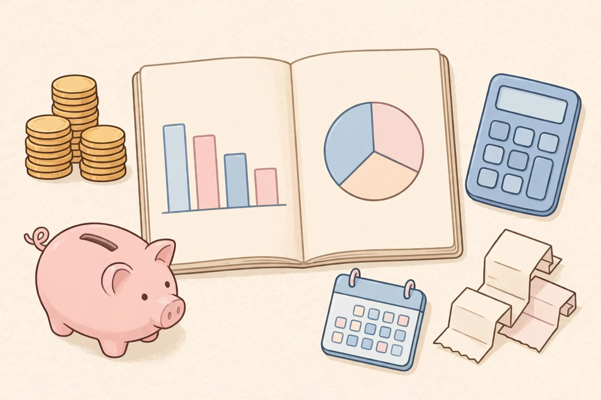

2026年11月16日｜キーワード：AI 家計 まとめ 報告
AIに家計のまとめを任せると、月末の「いくら使った？」が3つの数字で見える
「今月、いくら使ったんだっけ」——月末にそう思ってレシートをかき集めるより、使ったお金を「分ける・比べる・まとめる」の3つの流れで回すほうが、ずっと楽です。MUSE活用ラボの運営者の暮らしでは、家計のまとめはもともと毎朝のまとめの一項目でした。それを独立させて、月の流れとして回すようにしています。家計簿アプリの数字をAIに渡して、3つの数字で見える形にまとめてもらう仕組みを紹介します。
まず分ける：お金は「生活費・事業経費・貯金と積立」に分ける
家計のまとめでいちばん大事なのは、細かく記録することではなく、最初に分けることです。運営者の暮らしでは、家計簿アプリ（マネーフォワード ME）でお金を「生活費」「事業経費」「貯金」「旅行積立」「結婚準備費用」に分けて管理しています。分ける理由はシンプルで、混ざったままの数字を見ても「使いすぎかどうか」が分からないからです。たとえば食費は、2026年11月から月30,000円（1日およそ1,000円・自炊中心）を目標にしています。米は月に5kgと決まっています。こうした「決まっている数字」があると、まとめるときに比べる相手ができます。分ける作業は、家計簿アプリのカテゴリ分けに任せます。手で書き写すのではなく、アプリで分けた結果をそのまま使うのが、続けるコツです。
次に比べる：月の目標と、今のペースを1日あたりに直す
分けたあとは、月の目標と比べます。比べるときのポイントは、月末まで待たずに、月の途中でも「今のペース」を1日あたりに直して見ることです。食費の例で言うと、月の目標30,000円に対して「今月ここまで使った金額」を残りの日数で割ると、1日に使える金額が見えてきます。1日およそ1,000円が目安なら、残りの日数×1,000円が「あと使える目安」になります。運営者の暮らしでは、パートナーへのクリスマスプレゼント代として10,000円を取り置くことも決まっています（目標は合計15,000円）。こうした「取り置くお金」も、生活費とは別に分けておきます。取り置きを生活費に混ぜてしまうと、月末に「あれ、足りない」となりやすいからです。比べる作業は、数字を並べるだけです。「多い・少ない」の判断は、比べたあとに運営者自身が行います。AIに任せるのは、数字を並べて見える形にすることまでです。
月末にまとめる：報告は3つの数字だけ
月末のまとめは、長い文章にしません。運営者の暮らしでは、月末の家計の報告は3つの数字に絞っています。1つ目は「今月使った合計」。2つ目は「目標との差」。3つ目は「来月へ回す分（取り置きや積立）」です。この3つがあれば、「今月はどうだったか」と「来月はどうするか」がひと目で分かります。細かい内訳は、気になった項目だけあとから見に行けば十分です。毎朝のまとめと同じで、報告は「読むもの」ではなく「見るもの」にします。数字が3つに絞れていると、翌月の目標を決めるときにも迷いません。たとえば食費が目標の30,000円を超えていたら、翌月は献立の組み立て方を見直す、といった具合に、次の一手を考える材料になります。
家計のまとめの頼み方（そのまま使える形）
家計のまとめを頼むときは、分けた数字と目標を一緒に渡します。下の頼み方を、そのままコピペして使えます。
今月の家計をまとめてください。家計簿アプリの数字は次のとおりです。生活費の合計は○○円、事業経費の合計は○○円、貯金と積立の合計は○○円です。食費の月の目標は30,000円で、今月ここまで使った食費は○○円、今日は○日です。取り置きしているお金は、クリスマスプレゼント代として10,000円です。まとめは3つの数字に絞ってください。1つ目は今月使った合計、2つ目は目標との差、3つ目は来月へ回す分です。それぞれの数字に、1日あたりに直した目安も添えてください。判断やアドバイスは不要で、数字を並べて見える形にすることだけをお願いします。
最初は食費だけなど、1つの項目から始めて、慣れてきたら生活費全体、事業経費、積立と広げていくのが続けやすいやり方です。分ける・比べる・まとめる。この3つの流れが回り始めると、月末の「いくら使った？」が、探すものではなく、見るものに変わります。
この記事の家計のまとめは、秘書みゅうの「毎朝のまとめ」の仕組みの中で回っています。朝のまとめやメールの仕分けも、秘書みゅうのページで紹介しています。
入力場所は Instagram の固定投稿で案内しています